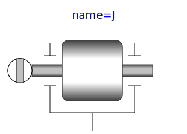

This component is used to model the gyroscopic torques exerted
by a 1-dim. inertia (so called rotor) on its 3-dim.
carrier body. Gyroscopic torques appear, if the vector of the
carrier body's angular velocity is not parallel to the vector of
the rotor's axis. The axis of rotation of the rotor is defined by
the parameter n, which has to be given in the local
coordinate system of frame_a. The default animation of
this component is shown in the figure below.
This component is a replacement for Modelica.Mechanics.Rotational.Components.Inertia for the case, that a 1-dim.-rotational mechanical system should be attached with a 3-dim. carrier body.
The Boolean parameter exact was introduced due to
performance reasons. If exact is set to
false, the influence of the carrier body motion on
the angular velocity of the rotor is neglected. This influence is
usually negligible if the 1-dim.-rotational mechanical system
accelerates much faster as the base body (this is, e.g., the case
in vehicle powertrains). The essential advantage is that an
algebraic loop is removed since then there is only an action on
acceleration level from the powertrain to the base body but not
vice versa.
Reference
Schweiger, Christian ;
Otter, Martin:
Modelling 3D Mechanical Effects of 1-dim. Powertrains. In:
Proceedings of the 3rd International Modelica Conference.
Linköping : The Modelica Association and Linköping University,
November 3-4, 2003, pp. 149-158
| Name | Description |
|---|---|
|  RotorWith3DEffects | 1D inertia attachable on 3-dim. bodies (3D dynamic effects are taken into account) |